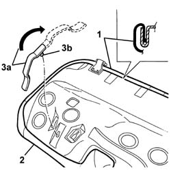
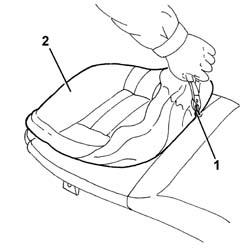

7050A30 Rear seat CUSHION COVER - R.R. with seat removed
- Path
- Procedures > 70 FITTINGS > 7050 REAR SEATS > 7050A rear seat assembly > 7050A30 Rear seat CUSHION COVER - R.R. with seat removed
- Kind
- repair procedure (removal / refitting; the operation number is the code)
- Applies to
- all engines; all production periods
- Interactive page
- https://sloeber94.github.io/elrnDB-a147/en/#/3025883
Applies to: all engines; all production periods
 Removing
Removing
 Refitting
Refitting1. Remove the cover along the entire perimeter of the seat.
2. Remove the cover from the padding.
3. If necessary, turn handle (3a) through 180 degrees and undo retainer (3b) to remove.

Applies to: all engines; all production periods
1. Using cutters, cut the top retaining hooks on the cushion cover.
2. Remove the trim from the padding.

Applies to: all engines; all production periods
Refitting
RemovingCheck that the trim is undamaged.
Fit the cover on the padding.
Hook on the top retaining hooks.
Position the cover with padding and fit it along the entire perimeter of the seat.
If the handle was removed, refit by reversing removal procedure.